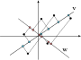
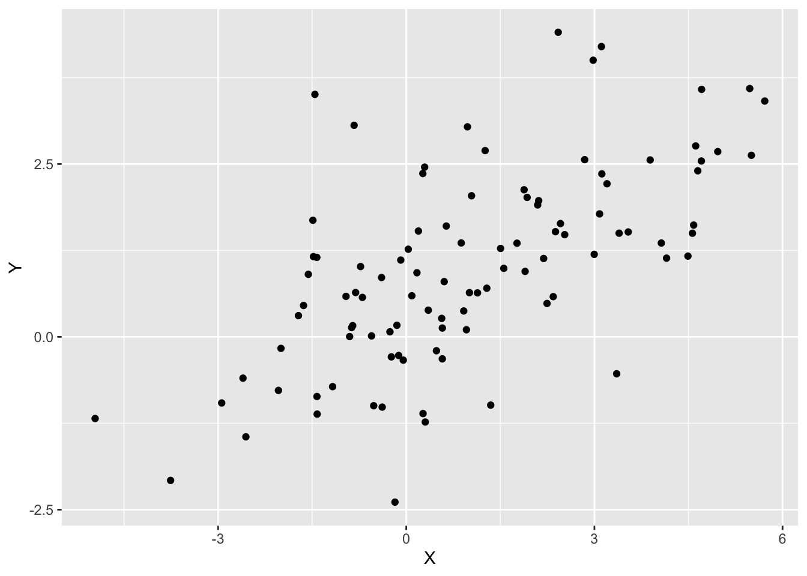
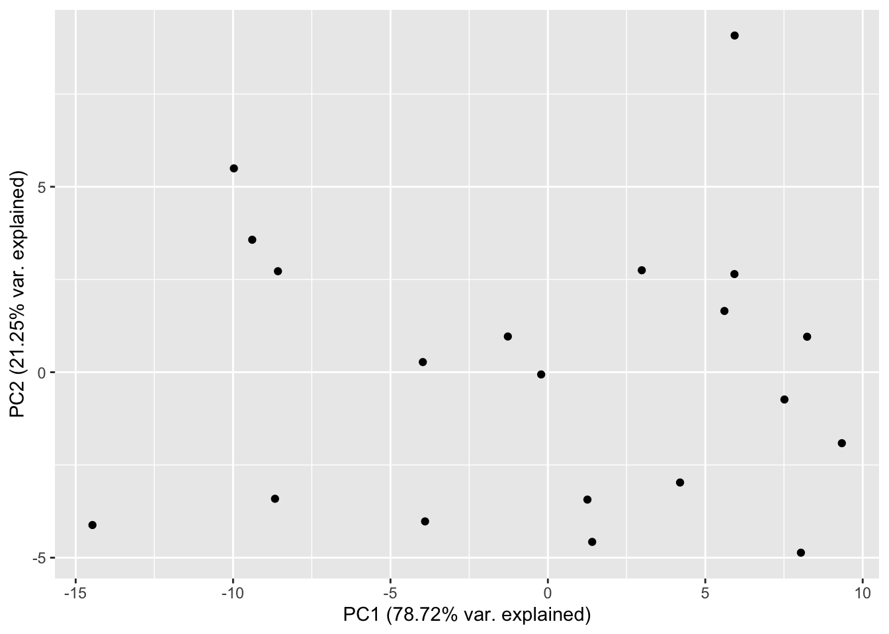
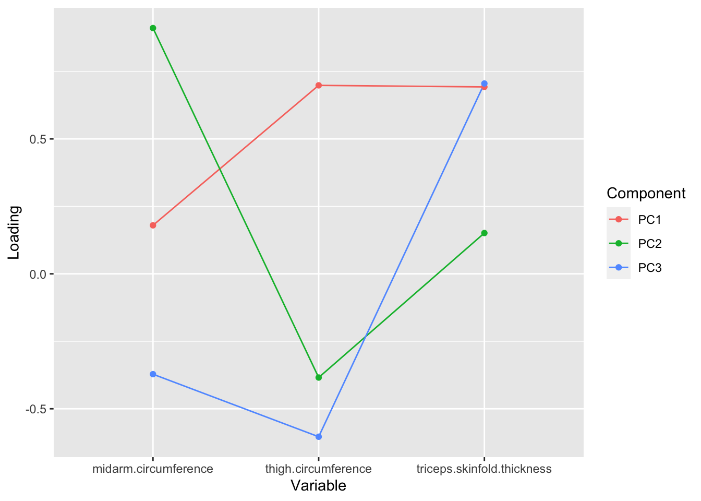
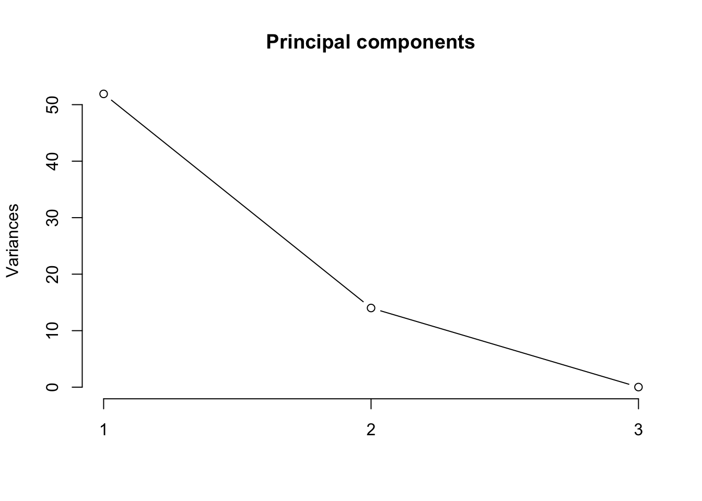
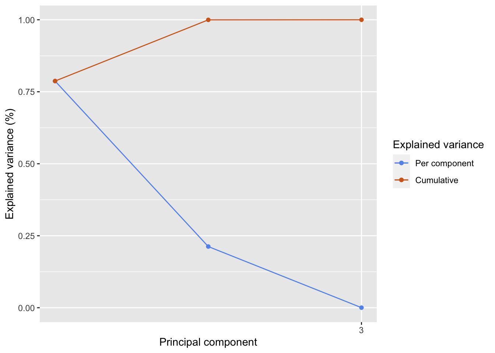
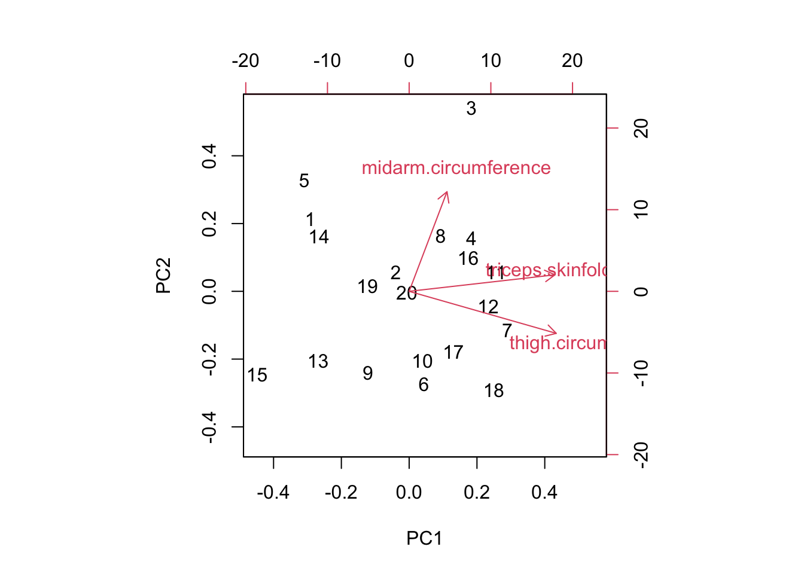

In the previous chapter we built a linear model to predict the amount of body fat, given measurements of the thickness of the triceps skin fold, the thigh circumference, and the midarm circumference. We saw that the dataset used for this model suffers from multicollinearity, meaning that some of the predictors (or linear combinations of predictors) are correlated with one another. Intuitively speaking, multicollinearity means that some variables don’t contribute much to the expressivity of the data: we could omit them and end up with a dataset that is almost as informative as the original one.
To find out which combinations of variables contribute most to the variability of our data, we will turn to principal component analysis, one of the mainstays of statistical data analysis. Principal component analysis will allow us to identify the main sources of variability in our dataset, and will tell us which combinations of variables can be omitted with only little impact on the data itself. This allows us to reduce the number of features in the dataset, and makes principal component analysis into what is called a technique for dimensionality reduction. This is useful for a number of reasons:
As a pre-processing technique: Many statistical techniques, such as multiple linear regression, do not perform well in the presence of highly correlated features. They either fail to converge outright, or they give unreliable results (for example, model coefficients and predictions that change drastically when the data is slightly perturbed). This is even more of an issue when there are more predictors than data points, a situation that often occurs when analysing gene expression data or spectroscopy data.
To save on computational processing time: analyzing superfluous variables comes with a cost, which can often increase drastically with the number of features. We will see an example of this phenomenon in Section 4.2, where the data points are vectors with 4096 components. After principal component reduction, the dimensionality of the dataset can be reduced to 50-100 components, a reduction by more than 98%.
To visualize the data: for datasets with a limited number of features, we can use a scatter matrix to view the distribution of the features and their relations with one another. Scatter matrices become uninformative, however, as soon as there are more than 4 or 5 features. Moreover, scatter matrices may hide correlations that occur between different linear combinations of variables, as we have seen in the chapter on linear modeling.
3.1 Intuition
Principal component analysis (PCA) finds a low-dimensional approximation to the dataset which retains as much as possible the variability of the original dataset. To understand what is meant by this, let’s revisit the body fat dataset of chapter 1. In this dataset, the features are the measurements of the thickness of the triceps skin fold, the thigh circumference, and the midarm circumference. The total body fat is the outcome, but we will not consider it for the time being.
Correlations between the different variables in the body fat dataset. The variables triceps.skinfold.thickness and thigh.circumference are highly correlated.
From the scatter matrix, we see that triceps.skinfold.thickness and thigh.circumference are highly correlated: if you know one, you can predict the other one reasonably well. This makes it feel like a waste to analyze both: since they carry the same information, we can just as well throw one or the other away, or replace both by a linear combination. Let’s do the latter, and introduce a new variable z1 which is the sum of both. In terms of this variable and midarm.circumference, which we leave unchanged, the dataset has only two features that are mildly correlated, as shown on the scatter plot below.
We have succeeded in our aim to reduce the number of features in our dataset from 3 to 2, but a number of questions immediately pop up:
What is the meaning of the z1 variable, and can we find it without looking at a scatter plot?
How much information do we lose by considering two variables instead of three? Will the conclusions from the reduced dataset still be valid for the full dataset?
It will turn out that the variable z1, which we constructed in an ad-hoc way, is remarkably close to the first principal component of the dataset, and we will discover a way to compute all principal components. We will also see that by discarding more or fewer principal components, as much variability of the original dataset can be retained as is needed.
3.2 Derivation of the PCA algorithm
PCA works by making linear combinations of the original variables so that the total amount of variation is maximal. There is another way of computing principal components, by minimizing the reconstruction error, and it can be shown that both approaches give the same principal components (Bishop (2006), section 12). In this course, we will develop the first method further.
We assume that we have \(N\) observations \(\mathbf{x}_{i}\), where each \(\mathbf{x}_i\) is a column vector in \(\mathbb{R}^D\). We assemble these observations into an \(N \times D\)data matrix\(\mathbf{X}\), where each row of \(\mathbf{X}\) is an observation \(\mathbf{x}_i\): \[
\mathbf{X} = \begin{bmatrix}
\mathbf{x}_1^T \\
\mathbf{x}_2^T \\
\cdots \\
\mathbf{x}_N^T \\
\end{bmatrix}.
\] Keep in mind that the columns of \(\mathbf{X}\) are the features (also referred to as independent variables or predictors) of the dataset. In the case of the body fat dataset, \(\mathbf{X}\) is a \(20 \times 3\) matrix, since there are 20 observations, with 3 features for each observation. We will refer to the \(j\)th column of \(\mathbf{X}\) by the notation \(\mathbf{X}_j\), where \(j = 1, \ldots, D\). Note that \(\mathbf{X}_j\) is a column vector, with \(N\) entries, and there are \(D\) such columns. For the body fat dataset, the columns correspond to the following features:
\(\mathbf{X}_1\): triceps.skinfold.thickness
\(\mathbf{X}_2\): thigh.circumference
\(\mathbf{X}_3\): midarm.circumference
3.2.1 The first principal component
The first principal component, \(\mathbf{Z}_1\) is a linear combination of the features, so that the amount of variation in \(\mathbf{Z}_1\) is maximized. Let’s unpack these ideas one at a time. The fact that \(\mathbf{Z}_1\) is a linear combination means that it can be written as \[
\mathbf{Z}_1 = v_1 \mathbf{X}_1 + \cdots + v_D \mathbf{X}_D = \sum_{j = 1}^D v_j \mathbf{X}_j.
\] where the \(v_j\) are coefficients that we have to determine. These coefficients are sometimes referred to as the principal component loadings, since \(v_j\) expresses how much of \(\mathbf{X}_j\) is added (“loaded”) to the principal component.
We can write this expression for \(\mathbf{Z}_1\) in a compact way by assembling all the coefficients \(v_j\) into a vector \(\mathbf{v}\), called the loadings vector: \[
\mathbf{v} =
\begin{bmatrix}
v_1 \\
v_2 \\
\cdots \\
v_D
\end{bmatrix}.
\] With this expression, \(\mathbf{Z}_1\) can be written as a matrix-vector product: \[
\mathbf{Z}_1 = \mathbf{X} \mathbf{v}.
\tag{3.1}\] We will often use this way of expressing \(\mathbf{Z}_1\) as a matrix-vector product, since it makes subsequent calculations easier.
Before we go on to determine the loadings \(v_j\), let’s focus on the geometry behind Equation 3.1. Each component of \(\mathbf{Z}_1\) can written as \[
(\mathbf{Z}_1)_i = \mathbf{x}_i^T \mathbf{v}.
\] This is the dot product of the \(i\)th observation \(\mathbf{x}_i\) with the loadings vector \(\mathbf{v}\). This dot product tells us how much of the vector \(\mathbf{x}_i\) is parallel to \(\mathbf{v}\), as shown in Figure 3.1. For example, a data point that is at right angles to \(\mathbf{v}\) will have dot product 0 (no component at all along \(\mathbf{v}\)), while one that is parallel to \(\mathbf{v}\) will have a dot product that is maximal in magnitude.
Figure 3.1: The \(i\)th component of the first principal component \(\mathbf{Z}_1\) is the length of the orthogonal projection of \(\mathbf{x}_i\) onto the line in the direction of \(\mathbf{v}\).
In other words, we obtain \(\mathbf{Z}_1\) by taking a fixed vector \(\mathbf{v}\) and projecting all of our data points on the line through the origin in the direction of \(\mathbf{v}\). If we choose another vector, \(\mathbf{w}\), we obtain a different projection, as indicated on Figure 3.2.

Figure 3.2: Two different projections, onto the loadings vector \(\mathbf{v}\) (blue) and \(\mathbf{w}\) (red).
Our goal is now to find the loadings vector \(\mathbf{v}\) so that the variance of the projected dataset is maximal. To make this problem well-posed, we will assume that \(\mathbf{v}\) has unit norm: \[
\mathbf{v}^T \mathbf{v} = 1.
\tag{3.2}\] If we did not impose this constraint, we could increase the amount of variance simply by making \(\mathbf{v}\) longer.
The mean of the projected data is given by \[
\bar{\mathbf{Z}}_1 = \frac{1}{N}\sum_{j=1}^N (\mathbf{Z}_1)_j
= \frac{1}{N}\sum_{j=1}^N \mathbf{x}_j^T \mathbf{v}
= \mathbf{\bar{x}}^T \mathbf{v},
\] where \(\mathbf{\bar{x}}\) is the (sample) mean of the original data points. In other words, the mean \(\bar{\mathbf{Z}}_1\) is just the mean \(\bar{\mathbf{x}}\) of the data points, projected onto \(\mathbf{v}\).
The variance of the projected data is given by \[
\sigma^2
=
\frac{1}{N} \sum_{i=1}^N\left(
(\mathbf{Z}_1)_i - \bar{\mathbf{Z}}_1\right)^2
= \frac{1}{N} \sum_{i = 1}^N\left(
\mathbf{x}_i^T \mathbf{v} -
\mathbf{\bar{x}}^T \mathbf{v}\right)^2.
\] This expression can be rewritten as a matrix product: \[
\sigma^2 = \mathbf{v}^T \mathbf{S} \mathbf{v},
\tag{3.3}\] where \(\mathbf{S}\) is the covariance matrix, given by \[
\mathbf{S} = \frac{1}{N}
\sum_{i = 1}^N \left(
\mathbf{x}_i \mathbf{x}_i^T -
\mathbf{\bar{x}}\mathbf{\bar{x}}^T \right).
\tag{3.4}\]
We are now ready to translate our problem into a mathematical form, so that we can solve it. To find the first principal component \(\mathbf{Z}_1\), we want to find a loadings vector \(\mathbf{v}\) so that the projected variance \(\sigma^2\), given in Equation 3.3, is maximized. In addition, we want \(\mathbf{v}\) to have unit length, as in Equation 3.2. In mathematical terms: \[
\mathbf{v} = \operatorname{argmax} \mathbf{v}^T \mathbf{S} \mathbf{v}, \quad
\text{such that $\mathbf{v}^T \mathbf{v} = 1$}.
\]
We can solve this optimization problem using the theory of Lagrange multipliers. If we introduce a Lagrange multiplier \(\lambda\) for the unit-length constraint, then the desired vector \(\mathbf{v}\) is given by \[
\mathbf{v} = \operatorname{argmax} L(\mathbf{v})
\] where \(L\) is given by \[
L(\mathbf{v}) = \mathbf{v}^T \mathbf{S} \mathbf{v} - \lambda( \mathbf{v}^T\mathbf{v} - 1).
\]
A necessary condition for \(\mathbf{v}\) to be a maximum of \(L\) is that the gradient vanishes at \(\mathbf{v}\). Taking the gradient of \(L\) with respect to \(\mathbf{v}\) and setting the resulting expression equal to zero gives \[
\mathbf{S} \mathbf{v} = \lambda \mathbf{v}.
\tag{3.5}\] This is a very important result: it tells us that the \(\mathbf{v}\) we are looking for is an eigenvector of the matrix \(\mathbf{S}\), with corresponding eigenvalue\(\lambda\). This will hold true generally, not just for the first principal component: finding the principal components of a data set will involve solving an eigenvalue problem, and selecting the largest eigenvalues.
Last, we have to find the Lagrange multiplier \(\lambda\). This can be done by multiplying Equation 3.5 from the left by \(\mathbf{v}^T\) to get \[
\mathbf{v}^T \mathbf{S} \mathbf{v} = \lambda \mathbf{v}^T \mathbf{v} = \lambda,
\] where we have used the unit-length constraint Equation 3.2.
We see that the Lagrange multiplier \(\lambda\) is precisely the variance \(\sigma^2\) of the first principal component \(\mathbf{Z}_1\). For this reason, we will refer to the eigenvalue \(\lambda\) as the amount of retained variance, since it expresses how much variance is captured by projecting the entire dataset onto the direction \(\mathbf{v}\).
To sum up, the first principal component \(\mathbf{Z}_1\) is a linear combination of the original features (columns) of our dataset, chosen so that the variance of \(\mathbf{Z}_1\) is maximal. We can find \(\mathbf{Z}_1\) by looking for the largest eigenvalue \(\lambda\) of the covariance matrix, with unit length eigenvector \(\mathbf{v}\), and projecting the data matrix \(\mathbf{X}\) onto \(\mathbf{v}\).
3.2.2 The remaining principal components
Now that we’ve computed the first principal component, how do we compute the others? It probably won’t come as a surprise that the next principal components, \(\mathbf{Z}_2\), \(\mathbf{Z}_3\), and so on, involve the amount of variation that is left in the data after \(\mathbf{Z}_1\) has been removed, and that they involve the second, third, … largest eigenvalues.
Assuming that we have computed \(\mathbf{Z}_1\) as in the previous section, and denote the loadings vector by \(\mathbf{v}_1\). Recall that \(\mathbf{v}_1\) points in the direction of the largest variance.
To find the next principal component, we consider the variability in the dataset that is not already accounted for by \(\mathbf{Z}_1\). More precisely, we look for a loadings vector \(\mathbf{v}_2\) which is orthogonal to \(\mathbf{v}_1\), has unit length, and maximizes the amount of variability \(\mathbf{v}_2^T \mathbf{S} \mathbf{v}_2\). By a similar reasoning as in the previous section, one can show that this \(\mathbf{v}_2\) is an eigenvector associated with the second largest eigenvalue of \(\mathbf{S}\). The projection of the dataset onto this loadings vector then gives us the second principal component: \[
\mathbf{Z}_2 = \mathbf{X}\mathbf{v}_2.
\] This procedure can be applied to find all \(D\) principal components and results in the following algorithm to compute the principal components:
Compute the sample covariance matrix \(\mathbf{S}\) using Equation 3.4.
Compute the eigenvalues of \(\mathbf{S}\) and order them from largest to smallest: \(\lambda_1 \ge \lambda_2 \ge \cdots \ge \lambda_D\).
Find the corresponding eigenvectors \(\mathbf{v}_1, \mathbf{v}_2, \ldots, \mathbf{v}_D\) and normalize them to unit length, if necessary. These vectors are the loading vectors and they point in the directions of highest variance.
Project the dataset onto the loading vectors to obtain the principal components \(\mathbf{Z}_1, \mathbf{Z}_2, \ldots, \mathbf{Z}_D\).
Typically, we do not have to compute the principal components by hand: most data analysis packages will do this for us, either via a builtin command, such as in R (prcomp) or minitab, or via an extra package, such as scikit-learn (Python) or xlstat (Excel). It is instructive, however, to know the principles behind PCA, so that you can interpret and understand the results.
Note
Software packages that compute the principal components of a dataset typically do not compute the eigenvalues and eigenvectors of the covariance matrix, despite our derivation above. Instead, they rely on the so-called singular value decomposition (SVD) of the data matrix (after centering). The SVD is typically more accurate and easier to compute, and the principal components obtained in this way agree with the ones computed using the eigendecomposition (to within numerical roundoff).
3.2.3 Worked-out example
For this example, we will calculate the principal components in two different ways. We will first compute the principal components by hand, by solving an eigenvalue problem. This is possible because the data are two-dimensional, and solving the characteristic equation for a two- or three-dimensional matrix can be done by hand. This is not practical for real-world datasets, which often contains dozens, thousands, or millions of features, and we will therefore also cover computing the principal components using R.
Our dataset consists of 100 observations, where each observation has two components. The dataset is shown below and has been carefully constructed so that the covariance matrix \(\mathbf{S}\) and mean \(\mathbf{\bar{x}}\) are exactly equal to \[
\mathbf{S} =
\begin{bmatrix}
5 & 2 \\
2 & 2 \\
\end{bmatrix},
\quad \text{and} \quad
\mathbf{\bar{x}} =
\begin{bmatrix}
1 \\
1
\end{bmatrix}.
\tag{3.6}\]
Code
library(mvtnorm)S <-matrix(c(5, 2, 2, 2), byrow =TRUE, nrow =2)adjust_cov_mean <-function(z, mean, sigma) {# Adjust NxD matrix z so that sample mean and sample # covariance are exactly `mean` and `sigma`# whiten the z's z_mean <-colMeans(z) z <-t(apply(z, 1, function(row) row - z_mean)) R <-chol(cov(z)) z <-t(solve(t(R), t(z)))# impose desired covariance, mean R <-chol(S) z <-t(apply(z %*% R, 1, function(row) row + mean)) z}z <-rmvnorm(100, mean =c(0, 0))z <-adjust_cov_mean(z, c(1, 1), S)df <-as.data.frame(z)colnames(df) <-c("X", "Y")ggplot(df, aes(x = X, y = Y)) +geom_point()

To find the loading vectors, we must find the eigenvalues of \(\mathbf{S}\), which we can do via the characteristic equation: \[
\det(\mathbf{S} - \lambda \mathbf{I}) = 0.
\]
Substituting the expression given in Equation 3.6 for the covariance matrix and expanding the determinant gives \[
\det \begin{bmatrix}
5 - \lambda & 2 \\
2 & 2 - \lambda \\
\end{bmatrix} = (5 - \lambda)(2 - \lambda) - 4 = 0.
\] The roots of this equation are \(\lambda_1 = 6\) and \(\lambda_2 = 1\). The corresponding eigenvectors are \[
\mathbf{v}_1 = \frac{1}{\sqrt{5}} \begin{bmatrix}
2 \\ 1
\end{bmatrix}, \quad
\mathbf{v}_2 = \frac{1}{\sqrt{5}} \begin{bmatrix}
-1 \\ 2
\end{bmatrix}.
\] These are our loading vectors, and they indicate the direction in which the data varies the most (for \(\mathbf{v}_1\)) and the “second-most” (for \(\mathbf{v}_2\)). Figure Figure 3.3 shows the dataset again, now with the two loading vectors superimposed. Each loading vector has been rescaled by multiplying it with the square root of the corresponding eigenvalue. Why the square root? The eigenvalue itself represents the variance in that direction, the square root the standard deviation.
Figure 3.3: The dataset with the first loading vector (blue) and the second loading vector (orange) superimposed. Each loading vector has been rescaled by the square root of the corresponding eigenvalue, to give an indication of the variability in that direction.
To compute the principal components directly via R, we can use the prcomp command, as shown below. This is generally the preferred option over computing the eigenvalue decomposition by hand: prcomp is more flexible (allowing one, for example, to scale the data before computing the principal components) and is also numerically more stable.1 For our simple dataset, the end result is the same:
pca <-prcomp(df)pca
Standard deviations (1, .., p=2):
[1] 2.44949 1.00000
Rotation (n x k) = (2 x 2):
PC1 PC2
X 0.8944272 -0.4472136
Y 0.4472136 0.8944272
Warning
Note that prcomp returns (among other things) the standard deviations, which are the square roots of the variances (eigenvalues). To compare the output of prcomp with the results of the eigenvalue analysis, make sure to take the square of the standard deviations, and you will see the eigenvalues appear:
pca$sdev^2
[1] 6 1
3.2.4 Standardizing the predictors
Prior to doing principal component analysis, the data are often standardized by subtracting the mean for each feature and dividing by the standard deviation. If the original predictors in our dataset are given by \(\mathbf{X}_i\), \(i = 1, \ldots, D\), this means that we introduce standardized variables \(\mathbf{Y}_i\), given by \[
\mathbf{Y}_i = \frac{\mathbf{X}_i - \bar{\mathbf{X}}_i}{\sqrt{S^2_i}},
\] where \(S^2_i\) is the variance of \(\mathbf{X}_i\). The resulting variables \(\mathbf{Y}_i\) will have mean 0 and variance 1.
Standardizing the predictors means that they will be comparable in magnitude: variables whose variance is small will gain in importance and large variables will decrease in importance, roughly speaking. This may change the PCA output significantly!
As a rule of thumb, you should standardize variables that are measured in different units (e.g. seconds, meters, Watt, …), since the unit can be rescaled without affecting the physical meaning of the variable, or its relation to other variables (e.g., rescaling a variable expressed in meters by a factor of 1000 is the same as expressing that variable in kilometers). By contrast, variables that are measured in the same units or that are unitless should not be rescaled (or should be rescaled collectively).
For an example of the latter, think about pixel intensities in an image dataset (such a dataset is in fact analyzed in Section 4.2). Pixels near the edge of the image presumably are part of the background, don’t vary that much, and are relatively unimportant, whereas pixels in the center are likely to be part of the image subject, vary a lot, and carry a lot of information. Standardizing the pixels would make the pixels near the edge just as variable as the pixels in the center, which would greatly amplify the noise in the image at the expense of the useful information in it!
Standardizing the predictors is also referred to as scaling.
3.3 Interpreting the PCA results
In this section we will discuss a number of useful results that follow from PCA. We will use the bodyfat dataset as an illustration throughout.
We can also ask R to print a summary of the principal component analysis for us. This will give us a table with the proportion of variance explained by each principal component, as well as the cumulative proportion (the amount of variance retained by that principal component and all previous ones).
summary(pc)
Importance of components:
PC1 PC2 PC3
Standard deviation 7.2046 3.7433 0.13308
Proportion of Variance 0.7872 0.2125 0.00027
Cumulative Proportion 0.7872 0.9997 1.00000
3.3.1 The score plot
Perhaps the most useful visualization of the PCA is the so-called score plot, which is nothing but a scatter plot of the first two principal components. It often happens that the score plot is sufficient to discern patterns in the data, such as clusters.
Figure 3.4 shows a score plot for the bodyfat dataset. While no obvious patterns in this dataset stand out, the plot does show that the principal components are uncorrelated, and this is a good confirmation of what we already know on theoretical grounds. It is customary to put the percentages of variance explained on the axis labels of the score plot, so that the person interpreting it can have an idea of how well the first two principal components describe the data.
Code
# Explained variation for first and second componenttotal_var <-sum(pc$sdev^2)pct_var_1 <- pc$sdev[1]^2/ total_varpct_var_2 <- pc$sdev[2]^2/ total_vardf <-data.frame(PC1 = pc$x[,1], PC2 = pc$x[,2])ggplot(df, aes(x = PC1, y = PC2)) +geom_point() +xlab(paste0("PC1 (", round(pct_var_1 *100, 2), "% var. explained)")) +ylab(paste0("PC2 (", round(pct_var_2 *100, 2), "% var. explained)"))

Figure 3.4: Score plot for the body fat dataset.
As an aside, above we noted that the principal components are uncorrelated with one another. We can also verify that this is the case numerically. The result is not exactly zero, but it is very small:
cov(pc$x[,1], pc$x[,2])
[1] 3.238883e-15
3.3.2 The loadings plot
A loadings plot shows the relations of the original variables and the principal components. This is often a useful visualization to see how each variable contributes to the principal components. Moreover, one can show that the loadings are proportional to the Pearson correlations between the principal components and the variables. Hence, if a loading is positive (negative), that variable will be positively (negatively) correlated with that principal component.2
At the beginning of this chapter we hypothesized that the variables thigh.circumference and triceps.skinfold.thickness would contribute about equally to the first principal component. From Figure 3.5 we see that this is indeed the case: both variables have loadings approximately equal to \(0.7\), when we consider the first principal component. We also see that the second principal component is mostly made up of the variable midarm.circumference.
Unfortunately there is no command in base R or ggplot to create a loadings plot – you have to make one yourself.
Code
library(tidyr)library(tibble)pc <-prcomp(bodyfat_predictors)df <-as.data.frame(pc$rotation) %>%rownames_to_column(var ="Variable") %>%pivot_longer(c("PC1", "PC2", "PC3"),names_to ="Component", values_to ="Loading")ggplot(df, aes(x =as.factor(Variable), y = Loading, group = Component, color = Component)) +geom_line() +geom_point() +xlab("Variable")

Figure 3.5: The loadings plot shows how the original variables are related to the principal components.
3.3.3 The number of principal components
We now know how to calculate the \(D\) principal components for a given \(D\)-dimensional dataset, and we’ve seen that the principal components correspond to the directions in which the dataset varies the most. The real power of PCA, and the reason why it is so ubiquitous in data analysis, is that we can now selectively discard principal components that are not informative. By doing this, we obtain a dataset with fewer features, which is hence easier to analyze, and where the discarded features do not contribute too much to the expressivity of the data. This is what makes PCA into a dimensionality reduction method.
The question remains what principal components to discard. There are no universally accepted rules for this, but there are a couple of rules of thumb that can help us make an informed choice. Most of these rules take into account the total amount of variance retained by the first \(K\) principal components, defined as \[
S_K = \frac{\sum_{i=1}^K\lambda_i}{\sum_{j=1}^D \lambda_j},
\] Recall that the total amount of variance can be computed directly within R by using the summary command (and look for the “Cumulative Proportion” row):
summary(pc)
Importance of components:
PC1 PC2 PC3
Standard deviation 7.2046 3.7433 0.13308
Proportion of Variance 0.7872 0.2125 0.00027
Cumulative Proportion 0.7872 0.9997 1.00000
The number \(K\) of principal components can be chosen so that a fixed amount of variance (for example, 95%) is retained. To see this idea in action, let’s apply it to the body fat dataset. The relative amount of variance explained by each principal component can then be calculated as follows:
and the total amount of variance explained cumulatively by
total_var <-cumsum(var_explained)total_var
[1] 0.7872224 0.9997314 1.0000000
Note that these numbers agree with the output of the summary command. For what follows, it will be easier to have access to these quantities as straightforward R vectors.
We see that the first two principal components explain 78.7% and 21.3% of the total variance, respectively, and together they explain more than 99.97% of variance in the dataset. It therefore seems reasonable to discard the last principal component, which contributes less than 0.03% of variance.
For datasets with many features, a scree plot or elbow plot can be helpful to identify high-variance principal components. In a scree plot, the amounts of variance are plotted in descending order, so that one can identify at a glance the amount of variability contributed by each principal component. Some scree plots also include the total amount of variability, \(S_K\), as a function of \(K\).
R can make a pretty basic scree plot for you, via the screeplot command.
screeplot(pc, main ="Principal components", type ="lines")

A scree plot made with the base R screeplot command.
With a bit more work, you can build your own scree plot, which is often preferable if you want to customize the plot, to include for example the cumulative variance, as in figure Figure 3.6.
Code
gg_screeplot <-function(pc, n =length(pc$sdev)) { sdev = pc$sdev[1:n] var_explained <- sdev^2/sum(sdev^2) total_var <-cumsum(var_explained) df_var <-data.frame(n =seq(1, n), v = var_explained, t = total_var)ggplot(df_var) +geom_line(aes(x = n, y = v, color ="Per component")) +geom_point(aes(x = n, y = v, color ="Per component")) +geom_line(aes(x = n, y = t, color ="Cumulative")) +geom_point(aes(x = n, y = t, color ="Cumulative")) +ylim(c(0, 1)) +scale_color_manual(name ="Explained variance",breaks =c("Per component", "Cumulative"),values =c("Per component"="cornflowerblue","Cumulative"="chocolate") ) +scale_x_continuous(breaks = n) +xlab("Principal component") +ylab("Explained variance (%)")}gg_screeplot(pc)

Figure 3.6: A scree plot for the body fat dataset confirms that the first two principal components explain almost all of the variance in the data.
Scree plots are often also referred to as “elbow plots”, since the plot typically (but not always) shows an “elbow” where the explained variance levels off. However, spotting the exact location of the elbow is very subjective, and it is typically more appropriate to take the point where the remaining principal components only contribute some small percentage of variation, for example 5%.
3.3.4 Biplots
The biplot consists of a loadings plot overlaid on a score plot. By default, it shows the first two principal components as a scatter plot, together with a set of vectors, one for each original variable, showing the contribution of that variable to the first two principal components. Biplots are relatively complex, but it is worth understanding what they encode.
biplot(pc)

Figure 3.7: The biplot provides information about the transformed data and the loadings.
The numbers on the plot represent the data points from the original dataset, expressed relative to the first two principal components. This is the part of the biplot that is like a score plot. The red arrows, on the other hand, represent the original variables in the dataset (as shown by the labels attached to them) and are expressed on the top and right-most axis, which show how much each variable contributes to the first two principal components. The red arrows carry the same information as a loadings plot (in a different form), when you consider only the first two principal component.
At one glance, we see that triceps.skinfold and thigh.circumference are the most important contributors to the first principal component, and that the second principal component is almost entirely made up by midarm.circumference. This confirms our intuition from the beginning of this chapter, as well as the conclusions that we drew from the loadings plot.
3.4 Principal component regression
Once we have performed PCA, we can build a linear model using the principal components that we have chosen to retain. This is known as principal component regression. Let’s see this in action for the bodyfat dataset. We start from a model where we include the first principal component only:
Call:
lm(formula = outcome ~ pc1)
Residuals:
Min 1Q Median 3Q Max
-5.1357 -1.8821 0.2682 1.7107 3.4992
Coefficients:
Estimate Std. Error t value Pr(>|t|)
(Intercept) 20.19500 0.58688 34.411 < 2e-16 ***
pc1 0.61366 0.08358 7.343 8.13e-07 ***
---
Signif. codes: 0 '***' 0.001 '**' 0.01 '*' 0.05 '.' 0.1 ' ' 1
Residual standard error: 2.625 on 18 degrees of freedom
Multiple R-squared: 0.7497, Adjusted R-squared: 0.7358
F-statistic: 53.91 on 1 and 18 DF, p-value: 8.128e-07
Adding the second principal component results in a bigger model, but the coefficient of the second principal component is not significant. We therefore do not include it in our final model and we stay with model_1.
Call:
lm(formula = outcome ~ pc1 + pc2)
Residuals:
Min 1Q Median 3Q Max
-3.9876 -1.8822 0.2562 1.3209 4.0285
Coefficients:
Estimate Std. Error t value Pr(>|t|)
(Intercept) 20.19500 0.56604 35.678 < 2e-16 ***
pc1 0.61366 0.08061 7.613 7.12e-07 ***
pc2 -0.23785 0.15514 -1.533 0.144
---
Signif. codes: 0 '***' 0.001 '**' 0.01 '*' 0.05 '.' 0.1 ' ' 1
Residual standard error: 2.531 on 17 degrees of freedom
Multiple R-squared: 0.7801, Adjusted R-squared: 0.7542
F-statistic: 30.15 on 2 and 17 DF, p-value: 2.564e-06
In this way, we obtain a simple least squares model, with one predictor and one outcome. Quite a simplification from our original linear model, which had three predictors and suffered from multi-collinearity. This reduction from 3 to 1 predictors may not seem like a big deal, but in the next chapter we will see examples of how PCA can be used to reduce datasets with many hundreds of variables to just 2-3 components, while maintaining the essential information in the dataset.
In this section we have built the linear model “by hand”, but in reality you would probably not want to do this, for two reasons:
Testing each predictor at a time when there are many hundreds of candidates to choose from is impractical.
Using the forward model building procedure, as we did above, comes with significant multiple-testing issues.
Luckily, there are R packages that will do the PCA, select the optimal number of components, and build the regression model all for us. Here we use the pls package. We tell it to consider all principal components, and to assess the error through cross-validation. The details of this will be discussed in class, but the important line in the output is labeled RMSEP. This shows a measure of error in function of the number of components taken into account. We see that this error is the lowest when only the first principal component is considered.
library(pls)pcr_model <-pcr(bodyfat ~ ., data = bodyfat, validation ="CV")summary(pcr_model)
Data: X dimension: 20 3
Y dimension: 20 1
Fit method: svdpc
Number of components considered: 3
VALIDATION: RMSEP
Cross-validated using 10 random segments.
(Intercept) 1 comps 2 comps 3 comps
CV 5.239 2.612 2.597 2.681
adjCV 5.239 2.602 2.583 2.656
TRAINING: % variance explained
1 comps 2 comps 3 comps
X 78.72 99.97 100.00
bodyfat 74.97 78.01 80.14
There are various rules to select the optimal number of components to consider. One such rule is the “1-sigma rule” (Hastie, Tibshirani, and Friedman 2009) which considers the model with the least number of components whose cross-validation error is at most one standard deviation away from the optimal model. In our case, this again results in a model with only one predictor.
Bishop, Christopher M. 2006. Pattern Recognition and Machine Learning. Vol. 2. Information Science and Statistics. Springer, New York.
Hastie, T., R. Tibshirani, and J. H. Friedman. 2009. The Elements of Statistical Learning: Data Mining, Inference, and Prediction. Springer Series in Statistics. Springer.
R has two commands to compute the principal components: prcomp and princomp. The former computes principal components using the so-called singular value decomposition (SVD) and is preferred for numerical stability. The latter, princomp, uses the eigenvalue decomposition as is provided for backwards compatibility with SAS.↩︎
There is a closely related plot type, the profile plot, which differs from the loadings plot in that it has the Pearson correlations on the \(y\)-axis. Otherwise the two plot types are identical.↩︎